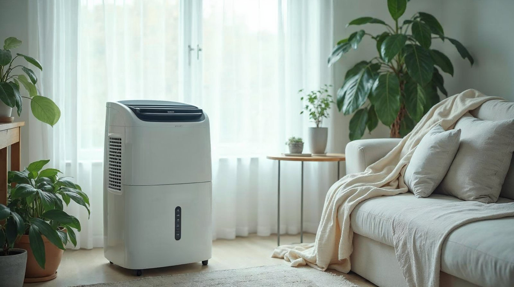
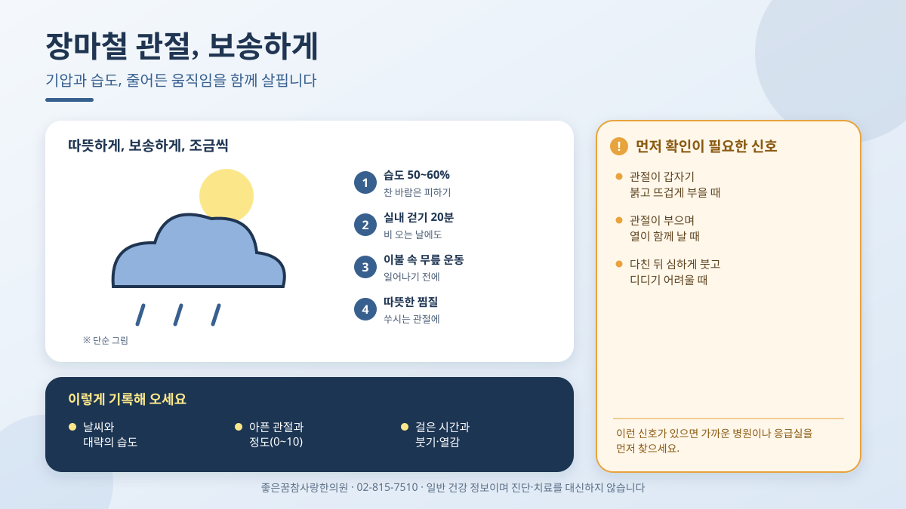

이종호 한의사 감수좋은꿈참사랑한의원 대표원장 (한의사 면허번호 19769)발행 2026-11-26 · 수정 2026-11-26
이 글의 차례
창밖 하늘이 낮게 내려앉은 아침, 일어나려는데 무릎이 뻣뻣하고 허리가 묵직합니다. 아직 비는 오지 않았지만 "오늘 비 오겠네" 하는 말이 저절로 나옵니다. 하루 종일 몸이 젖은 솜처럼 무겁고, 계단을 오를 때마다 무릎이 시큰합니다.
장마철이 되면 진료실에는 이런 말씀이 부쩍 늘어납니다. "날씨 때문인지 온몸이 쑤셔요." "비 오기 전에 무릎이 먼저 알아요." 가족들은 날씨 핑계라고 웃어넘기기도 하지만, 정작 당사자에게는 하루를 무겁게 만드는 진짜 불편입니다.
날씨에 따라 관절이 쑤시는 느낌은 오래전부터 많은 분이 말해 온 경험입니다. 연구마다 결과가 조금씩 다르지만, 기압과 습도, 기온의 변화가 관절과 근육의 느낌에 영향을 줄 수 있다는 설명이 꾸준히 나오고 있습니다. 오늘은 장마철에 몸이 왜 무거워지는지, 그리고 그 시기를 어떻게 덜 힘들게 보낼 수 있을지 함께 정리해 보겠습니다.
장마철 관절 쑤심은 어떻게 느껴지나요?
가장 흔한 것은 무릎, 허리, 어깨, 손가락 마디가 욱신거리거나 시큰한 느낌입니다. 특히 예전에 다쳤던 자리, 수술했던 자리, 원래 관절염이 있던 자리가 먼저 반응한다고 말씀하시는 분이 많습니다.
관절만이 아니라 온몸이 무겁고 나른한 느낌도 함께 옵니다. 아침에 몸이 잘 풀리지 않고, 다리가 붓는 것 같으며, 머리가 맑지 않습니다. 소화가 더디고 입맛이 떨어지거나, 대변이 묽어지는 분도 계십니다.
이런 불편은 비가 오기 하루 이틀 전부터 시작되기도 하고, 비가 며칠 이어지는 동안 점점 심해지기도 합니다. 해가 나고 공기가 마르면 한결 가벼워지는 흐름을 보이는 경우가 많습니다. 이 흐름 자체가 장마철 불편을 알아보는 단서입니다.
왜 장마철에 관절이 쑤시고 몸이 무거울까요
첫째는 기압의 변화입니다. 비가 오기 전에는 대기의 압력이 낮아집니다. 바깥에서 누르는 압력이 줄면 관절 안과 주변 조직이 아주 조금 부풀 수 있고, 이미 예민해진 관절에서는 이 작은 변화가 뻐근함이나 통증으로 느껴질 수 있다는 설명이 있습니다.
둘째는 습도와 기온입니다. 습하고 서늘한 공기는 몸의 열을 빼앗고, 근육과 힘줄을 굳게 만듭니다. 굳은 근육은 관절을 더 단단히 붙잡게 되어, 움직일 때 뻣뻣함과 통증이 커집니다. 습도가 높으면 땀이 잘 마르지 않아 몸이 끈적하고 무겁게 느껴지기도 합니다.
셋째는 줄어든 움직임입니다. 비가 오면 산책을 건너뛰고, 실내에서 오래 앉아 있거나 누워 지내게 됩니다. 관절은 움직여야 그 안의 윤활액이 돌고 주변 근육이 유연해지는데, 며칠씩 움직이지 않으면 오히려 더 뻣뻣해지기 쉽습니다.
넷째는 마음과 잠입니다. 흐리고 어두운 날이 이어지면 기분이 가라앉고 잠의 질도 흔들리기 쉽습니다. 잠이 얕고 마음이 무거우면 같은 통증도 더 크게 느껴집니다.
한의학에서는 이런 모습을 습한 기운이 몸에 머물러 무겁고 쑤시는 상태로 설명해 왔습니다. 진찰에서 쓰는 전통적인 표현이고 따로 진단명은 아니지만, 장마철 불편이 관절 하나의 문제가 아니라 몸 전체의 무거움과 함께 온다는 점을 잘 보여 주는 시각입니다.
날씨 탓만은 아닐 수 있습니다
장마철에 관절이 쑤시는 것은 흔한 일이지만, 모든 것을 날씨 탓으로 돌리면 놓치는 것이 생길 수 있습니다. 날씨는 이미 있던 관절의 문제를 드러내는 계기가 되는 경우가 많기 때문입니다.
무릎이 계단에서 시큰하고 자주 붓는다면 퇴행성 관절염이 바탕에 있을 수 있습니다. 아침에 손가락 마디가 30분 넘게 굳어 있고 여러 관절이 양쪽으로 붓는다면 류마티스 관절염 같은 염증성 관절 질환도 살펴봐야 합니다. 엄지발가락이나 발목이 갑자기 붉게 붓는다면 통풍을 떠올려 봅니다.
이런 경우에는 정형외과나 류마티스내과에서 검사를 받아 보시고, 진단에 맞는 치료를 이어 가시는 것이 먼저입니다. 날씨와 상관없이 통증이 몇 주째 이어지거나 점점 심해진다면 더욱 그렇습니다. 한의원 진료는 그 치료와 나란히 갑니다.
예전에 다친 자리가 먼저 아픈 이유
비 오는 날이면 몇 해 전 삐끗했던 발목이나 수술했던 무릎이 먼저 쑤신다는 말씀을 자주 듣습니다. 다친 자리는 겉으로는 아물었어도, 그 안의 조직이 예전과 조금 다르게 회복되어 있는 경우가 많습니다. 흉터 조직은 주변보다 덜 유연하고, 신경도 바깥 변화에 더 예민하게 반응하기 쉽습니다.
또 다친 뒤 그 자리를 아끼느라 주변 근육을 덜 쓰다 보면, 근육이 약해지고 관절을 받쳐 주는 힘이 줄어듭니다. 그러면 날씨 변화처럼 작은 자극에도 관절이 쉽게 불편해집니다. 그래서 장마철에 특정 자리가 반복해서 아프다면, 그 자리를 받쳐 주는 근육을 조금씩 길러 두는 것이 다음 장마를 준비하는 일이 됩니다.
무릎이라면 허벅지 앞쪽 근육, 허리라면 배와 엉덩이 근육, 발목이라면 종아리 근육이 관절을 받쳐 주는 역할을 합니다. 아프지 않은 범위에서 천천히 힘을 주는 운동을 맑은 날부터 꾸준히 이어 가시면, 장마철을 맞는 몸의 바탕이 조금씩 단단해질 수 있습니다.
장마철에 더 힘들어하시는 분들
예전에 관절을 다쳤거나 수술한 적이 있는 분, 퇴행성 관절염이 있는 분이 먼저 떠오릅니다. 교통사고나 운동 중 부상 뒤로 비 오는 날만 되면 그 자리가 쑤신다고 하시는 분도 많습니다.
평소 몸이 잘 붓고 무거운 분, 땀이 잘 나지 않는 분, 소화가 약해 물만 마셔도 배가 출렁이는 느낌이 드는 분도 장마철에 유난히 힘들어하십니다. 체중이 늘어 무릎에 부담이 커진 분도 비슷합니다.
에어컨과 제습기를 오래 켜 둔 실내에서 지내시는 분은 습도는 낮아도 찬 공기 때문에 관절이 굳을 수 있습니다. 습기와 냉기가 번갈아 오는 환경도 관절에는 부담이 됩니다.
먼저 이렇게 여쭙니다
처음 오시면 대략 이런 순서로 여쭙니다. 미리 떠올려 오시면 이야기가 수월해집니다.
- 어느 관절이 가장 불편하고, 장마철 말고 평소에도 아픈가요?
- 아침에 일어났을 때 관절이 굳어 있는 시간은 얼마나 되나요?
- 관절이 붓거나 붉어지거나 뜨거워진 적이 있나요?
- 예전에 다치거나 수술한 관절이 있나요?
- 비 오는 날 하루를 주로 어디서, 어떤 자세로 보내시나요?
- 잠과 소화, 대변은 장마철에 달라지나요?
- 드시는 진통제나 관절약, 다른 약이 있나요?
모든 질문에 정확히 답하지 못하셔도 괜찮습니다. '비 오기 전날 저녁부터 오른 무릎이 시큰하다'처럼 흐름만 말씀해 주셔도 충분합니다.
일상에서 먼저 해 볼 수 있는 것
장마철 관절 불편은 몸을 따뜻하고 보송하게, 그리고 조금이라도 움직이게 하는 것이 기본입니다.
- 실내 습도는 50~60% 정도로 맞추고, 제습기를 쓸 때는 찬 바람이 몸에 닿지 않게 하기
- 비 오는 날에도 실내에서 하루 20~30분은 걷거나 제자리걸음하기
- 아침에 일어나기 전 누운 채로 무릎과 발목을 천천히 굽혔다 펴기
- 쑤시는 관절은 따뜻한 수건이나 찜질팩으로 10~15분 데우기
- 젖은 옷과 양말은 바로 갈아입고, 무릎과 허리는 얇은 옷으로 덮기
- 짠 음식과 늦은 야식을 줄여 몸이 붓지 않게 하기
움직이기 싫은 날일수록 작게라도 움직이는 것이 중요합니다. 거실을 천천히 몇 바퀴 도는 것, 의자에 앉아 다리를 앞으로 쭉 폈다 내리는 것, 벽을 짚고 발뒤꿈치를 들었다 내리는 것처럼 부담 없는 동작으로 시작해 보세요.
따뜻한 물로 샤워하거나 족욕을 하는 것도 굳은 근육을 푸는 데 도움이 됩니다. 다만 관절이 붉고 뜨겁게 부어 있다면 열을 더하지 말고 먼저 진료를 받아 보세요.
습한 날에는 찬 음료와 찬 과일을 많이 드시면 몸이 더 무겁게 느껴질 수 있습니다. 따뜻한 차와 국, 잘 익힌 채소를 곁들이고, 물은 목마를 때 조금씩 나눠 드시는 것이 좋습니다.

장마철 집 안 환경 살피기
장마철에는 집 안 환경을 조금만 손봐도 몸이 한결 가벼워질 수 있습니다. 습도계를 하나 두고 숫자를 보며 제습기나 에어컨의 제습 기능을 쓰시면, 막연히 눅눅하다고 느끼는 것보다 조절이 훨씬 쉬워집니다.
잠자리는 특히 신경 써 주세요. 습한 이불과 요는 밤새 몸을 차고 무겁게 만듭니다. 비가 그친 틈에 이불을 말리고, 침대 밑이나 벽 쪽에 습기가 차지 않게 환기해 주세요. 바닥에서 주무신다면 얇은 매트를 한 장 더 깔아 바닥의 습기와 냉기가 올라오지 않게 하는 것도 방법입니다.
욕실과 주방처럼 물을 많이 쓰는 곳은 쓰고 난 뒤 문을 열어 습기를 빼 주세요. 비 오는 날 바닥이 미끄러워 넘어지면 관절에 더 큰 부담이 되니, 욕실과 현관에는 미끄럼 방지 매트를 깔아 두시면 좋습니다.
장마철 마음과 잠도 함께 돌보기
흐린 하늘이 며칠씩 이어지면 햇빛을 보는 시간이 줄어 기분이 가라앉고, 낮과 밤의 구분이 흐려져 잠의 리듬도 흔들리기 쉽습니다. 몸이 무거우니 더 눕게 되고, 누워 있으니 밤잠이 얕아지는 흐름이 생깁니다.
비가 그친 틈에는 잠깐이라도 밖으로 나가 밝은 빛을 쬐어 주세요. 아침에 일어나면 커튼을 열고 불을 환하게 켜는 것만으로도 몸이 하루를 시작하는 신호를 받습니다. 낮잠은 짧게, 잠드는 시각은 평소와 같게 지키시면 밤잠을 지키는 데 도움이 됩니다.
통증이 있는 날은 마음도 예민해지기 마련입니다. 아픈 정도를 숫자로 적어 두고 어제와 비교해 보면, 막연한 불안이 조금 줄어들고 덜 아픈 날도 분명히 있다는 것이 보이기 시작합니다. 그 날에 무엇을 했는지 함께 적어 두면 더 좋습니다.
한의원에서 함께 살필 수 있는 경우
- 장마철마다 무릎, 허리, 어깨가 쑤시고 뻣뻣해지는 경우
- 예전에 다쳤던 자리가 비 오는 날마다 불편해지는 경우
- 온몸이 무겁고 붓는 느낌에 소화까지 더딘 경우
- 관절염 치료를 받고 있지만 장마철 불편이 유난히 심한 경우
- 흐린 날이 이어지면 잠이 얕아지고 통증이 더 크게 느껴지는 경우
좋은꿈참사랑한의원에 오시면 먼저 아래 '먼저 확인이 필요한' 신호가 없는지부터 봅니다. 그다음 맥을 짚고, 아픈 관절을 직접 만지고 움직여 보며 붓기와 온도, 굳은 근육의 자리를 확인합니다.
진찰 내용을 바탕으로 생활에서 바꿔 볼 것 하나와 함께 침, 약침, 온열 관리, 한약 상담 가운데 지금 상태에 맞는 것을 정합니다. 한약을 상의할 때는 드시는 약을 모두 확인하고 신중하게 정하며, 임신 중이시거나 가능성이 있다면 먼저 알려 주세요. 산부인과 선생님과 상의하는 것이 우선입니다.
정형외과나 류마티스내과에서 받으시는 치료와 약은 상의 없이 멈추지 않습니다. 한의원 진료는 그 치료와 나란히, 장마철에 몸이 덜 무겁게 지낼 수 있도록 함께 살피는 쪽으로 갑니다.
이렇게 기록해 오시면 상담이 쉬워집니다
장마철 2~3주 동안 간단히 적어 보시면, 날씨와 몸의 연결이 눈에 보이기 시작합니다.
- 그날의 날씨(맑음, 흐림, 비)와 대략의 습도
- 가장 불편했던 관절과 아픈 정도(0~10)
- 아침에 관절이 굳어 있던 시간
- 그날 걸은 시간이나 움직인 정도
- 붓기, 열감, 붉어짐이 있었는지
- 잠든 시각과 잠의 깊이, 드신 진통제
기록을 보시면 비가 온 날보다 움직이지 않은 날 더 아팠다거나, 찜질을 한 날은 한결 편했다는 식의 나만의 흐름이 보이기도 합니다. 그 흐름이 다음 장마를 준비하는 실마리가 됩니다.
다음 장마를 조금 덜 무겁게
장마철 관절 쑤심은 몸이 날씨에 예민하게 반응하고 있다는 신호입니다. 날씨를 바꿀 수는 없지만, 그 날씨 속에서 몸을 따뜻하고 보송하게, 조금씩 움직이게 지켜 줄 수는 있습니다.
이번 장마에는 습도계 하나 두기, 비 오는 날 실내 걷기 20분, 아침 이불 속 무릎 굽혔다 펴기 가운데 하나만 골라 보세요. 다음에 오시면 장마 동안의 기록을 함께 펼쳐 보며 어떤 날이 가장 힘들었는지 같이 살펴보겠습니다.
이런 증상은 먼저 확인이 필요합니다
- 관절 하나가 갑자기 붉고 뜨겁게 부어오르며 열이 함께 나는 경우
- 넘어지거나 부딪힌 뒤 관절이 심하게 붓고 디디거나 움직이기 어려운 경우
이런 신호가 있으면 한의원보다 가까운 병원이나 응급실을 먼저 찾으세요.
함께 읽으면 좋은 글
- 계단에서 시큰하고 자주 붓는 무릎 퇴행성 관절염은 어떻게 살피나요?
- 류마티스 관절염으로 치료 중일 때 한의원에서는 무엇을 함께 살피나요?
- 온몸이 쑤시고 검사는 정상이라는 섬유근육통은 어떻게 살피나요?
- 근육이 아픈 것인지 관절이 아픈 것인지 어떻게 짚어서 말하나요?
- 저녁마다 다리가 붓고 양말 자국이 깊게 남을 때, 부종은 무엇을 나눠 살피나요?

여쭙는 것
- 어느 관절이 가장 불편하고, 장마철 말고 평소에도 아픈가요?
- 아침에 일어났을 때 관절이 굳어 있는 시간은 얼마나 되나요?
- 관절이 붓거나 붉어지거나 뜨거워진 적이 있나요?
생활에서 해 볼 것
- 실내 습도는 50~60% 정도로 맞추고, 제습기를 쓸 때는 찬 바람이 몸에 닿지 않…
- 비 오는 날에도 실내에서 하루 20~30분은 걷거나 제자리걸음하기
- 아침에 일어나기 전 누운 채로 무릎과 발목을 천천히 굽혔다 펴기
한의원에서 함께 살필 것
- 장마철마다 무릎, 허리, 어깨가 쑤시고 뻣뻣해지는 경우
- 예전에 다쳤던 자리가 비 오는 날마다 불편해지는 경우
- 온몸이 무겁고 붓는 느낌에 소화까지 더딘 경우
먼저 확인이 필요한 신호
- 관절 하나가 갑자기 붉고 뜨겁게 부어오르며 열이 함께 나는 경우
- 넘어지거나 부딪힌 뒤 관절이 심하게 붓고 디디거나 움직이기 어려운 경우
한눈에 보는 표
| 구분 | 핵심 |
|---|---|
| 여쭙는 것 | 어느 관절이 가장 불편하고, 장마철 말고 평소에도 아픈가요? 아침에 일어났을 때 관절이 굳어 있는 시간은 얼마나 되나요? |
| 생활에서 해 볼 것 | 실내 습도는 50~60% 정도로 맞추고, 제습기를 쓸 때는 찬 바람이 몸에 닿지 않게 하기 비 오는 날에도 실내에서 하루 20~30분은 걷거나 제자리걸음하기 |
| 한의원에서 함께 살필 것 | 장마철마다 무릎, 허리, 어깨가 쑤시고 뻣뻣해지는 경우 예전에 다쳤던 자리가 비 오는 날마다 불편해지는 경우 |
| 먼저 확인이 필요한 신호 | 관절 하나가 갑자기 붉고 뜨겁게 부어오르며 열이 함께 나는 경우 넘어지거나 부딪힌 뒤 관절이 심하게 붓고 디디거나 움직이기 어려운 경우 |
자주 묻는 질문
비 오기 전에 무릎이 쑤시는 게 정말 날씨 때문일까요?
기압과 습도, 기온의 변화가 예민해진 관절의 느낌에 영향을 줄 수 있다는 설명이 있습니다. 다만 날씨는 이미 있던 관절 문제를 드러내는 계기인 경우가 많아서, 관절 상태를 함께 살펴보는 것이 좋습니다.
관절이 쑤실 때는 찜질을 따뜻하게 하나요, 차갑게 하나요?
장마철에 뻣뻣하고 쑤시는 관절은 따뜻한 찜질이 편한 경우가 많습니다. 다만 관절이 붉고 뜨겁게 부어 있다면 열을 더하지 말고 먼저 진료를 받아 보세요.
비 오는 날 운동을 쉬어도 될까요?
바깥 운동은 쉬셔도 실내에서 걷거나 관절을 천천히 움직이는 시간은 이어 가시길 권합니다. 며칠씩 가만히 있으면 관절이 더 굳기 쉽습니다.
관절염 약을 먹고 있는데 한의원 치료를 받아도 되나요?
드시는 약을 알려 주시면 그에 맞춰 진료 방향을 정합니다. 처방받은 약은 상의 없이 멈추지 않고, 한의원 진료는 그 치료와 나란히 갑니다.
제습기를 켜면 관절이 덜 쑤실까요?
실내 습도를 적당히 맞추면 몸이 덜 무겁게 느껴진다는 분이 많습니다. 다만 찬 바람이 관절에 직접 닿지 않게 하고, 너무 건조해지지 않도록 습도계를 함께 보세요.
좋은꿈참사랑한의원은 재진 때 지난번 이야기부터 이어서 여쭙니다. 진료시간과 예약은 오시는 길에서 확인하세요.
어디서 상담받을 수 있나요?
좋은꿈참사랑한의원은 서울 동작구 만양로2길 2 신성빌딩 3층·5층(서울 동작구 상도동, 7호선 상도역 3번 출구 근처)에 있습니다. 한의사 3명(이종호 대표원장, 조영기 수석진료원장, 정원영 진료원장)이 진료합니다. 진료시간은 평일 09:30~20:00(점심 13:00~14:00), 토·일·공휴일 09:30~15:00이며, 방문 전 전화로 확인을 권합니다. 예약은 네이버 예약, 카카오톡 상담, 전화 02-815-7510로 받습니다.
이 글은 일반적인 건강 정보이며 개인의 진단이나 치료를 대신하지 않습니다. 증상이 있거나 복용 중인 약이 있다면 진료를 통해 확인하세요. 치료 효과는 개인마다 다를 수 있습니다.
작성 기준: 일반적으로 알려져 있는 건강 정보를 참고해 정리했습니다(대표원장 감수). 증상 기록은 1~2주 동안 하루 1회, 비슷한 시간에 적어 오시면 지난 상태와 비교하기 쉽습니다.